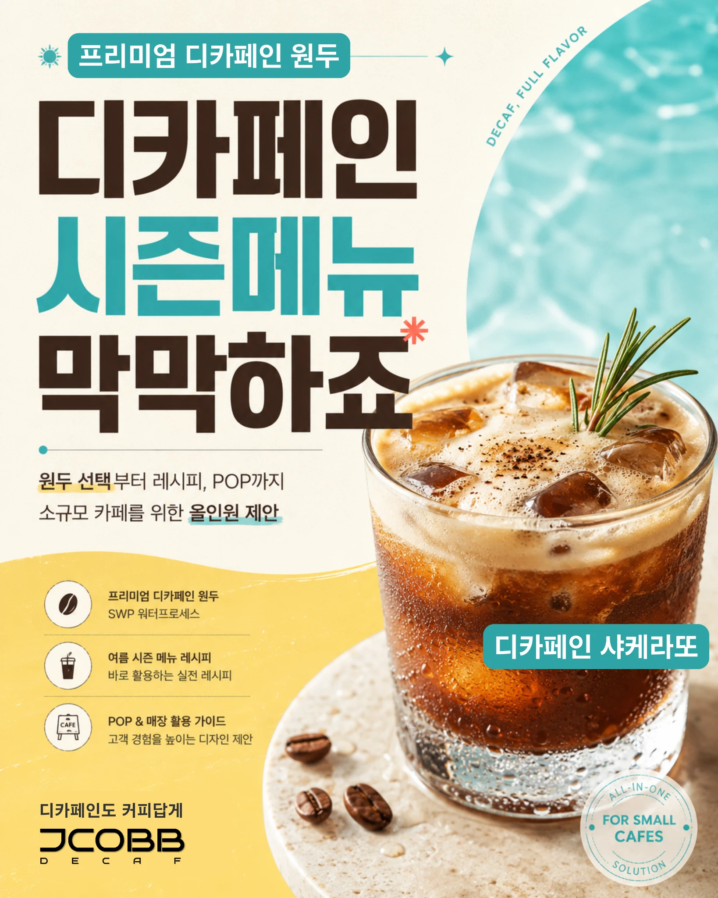
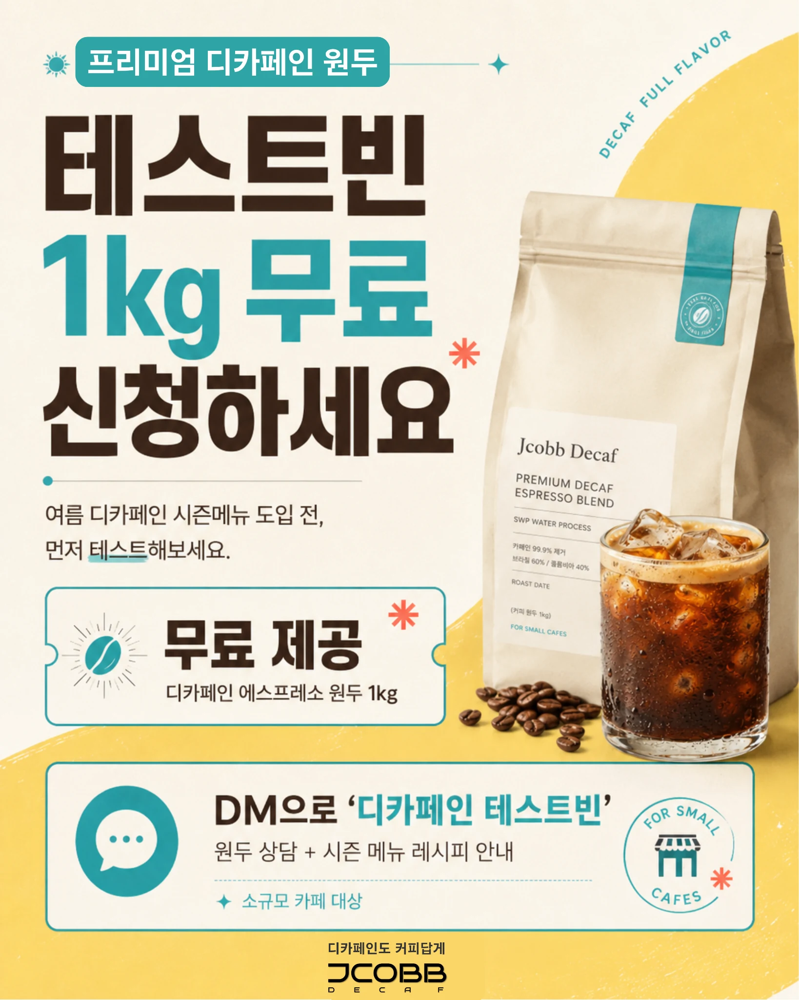

1
프리미엄 디카페인 원두
카페인 부담은 낮추고, 커피의 풍미는 살린 디카페인 원두를 제공합니다. 아메리카노, 라떼, 샤케라또 등 다양한 메뉴에 적용할 수 있습니다.
소규모 카페가 바로 판매할 수 있는 디카페인 메뉴를 만들 수 있도록 원두, 레시피, POP를 함께 제공합니다.

카페인 부담은 낮추고, 커피의 풍미는 살린 디카페인 원두를 제공합니다. 아메리카노, 라떼, 샤케라또 등 다양한 메뉴에 적용할 수 있습니다.
여름 시즌에 바로 활용할 수 있는 디카페인 메뉴 레시피를 제공합니다. 복잡한 메뉴보다 소규모 카페에서 실행 가능한 레시피를 우선합니다.
메뉴를 만들어도 알리지 않으면 팔리지 않습니다. 카운터 안내 POP, 포스터, 인스타그램 이미지까지 지원합니다.
| 원두 | 디카페인 에스프레소 원두, 원두 선택 상담, 카페 메뉴 스타일에 맞춘 추천 |
| 레시피 | 디카페인 아이스 아메리카노, 라떼, 샤케라또, 오렌지 커피 등 여름 메뉴 |
| POP | 카운터 안내문, 시즌 포스터, 드립백 진열 안내문, SNS 업로드용 이미지 |

소규모 카페를 위한 실행 가능한 패키지로 안내드립니다.